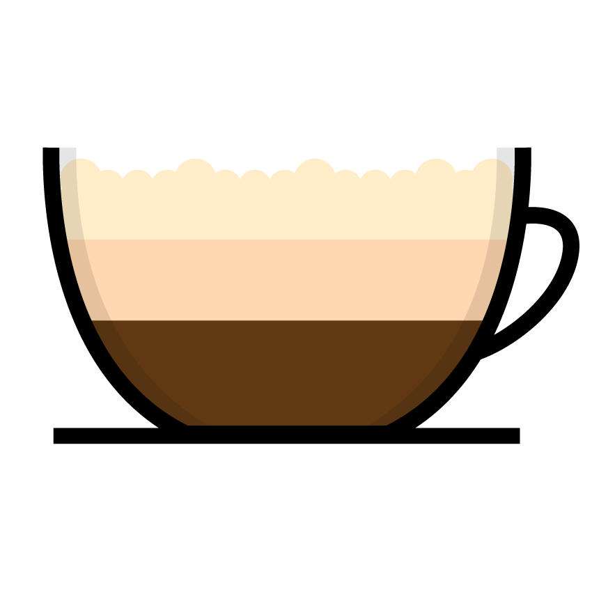
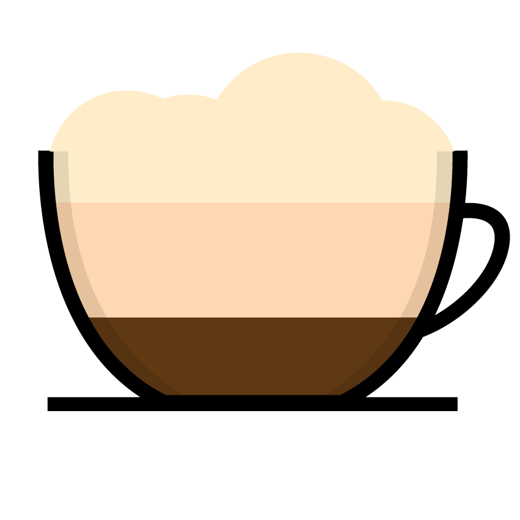
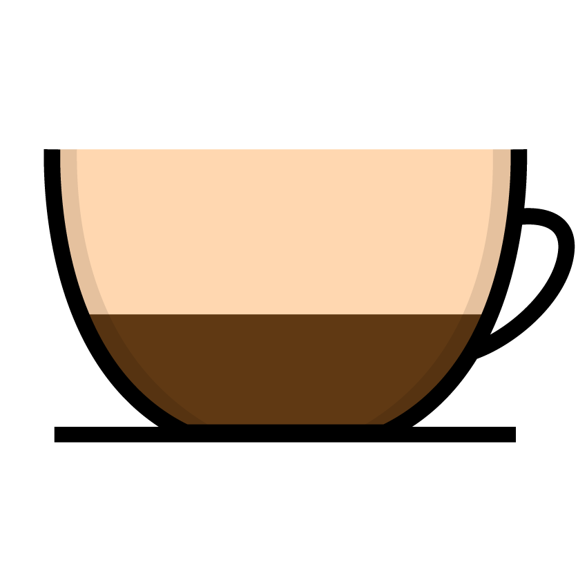
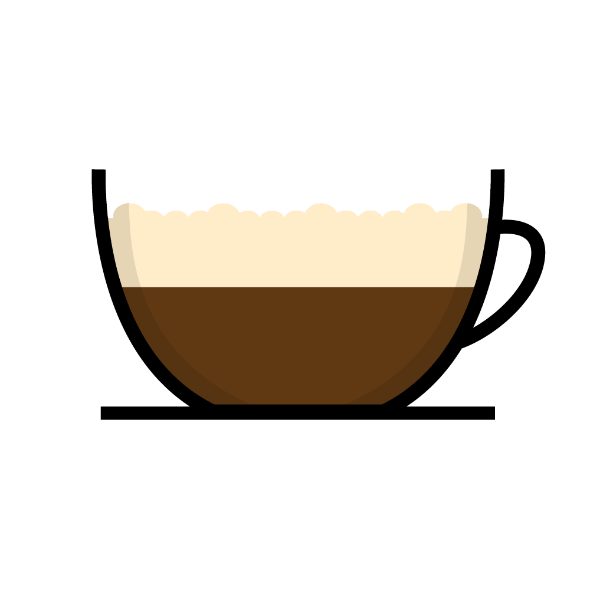
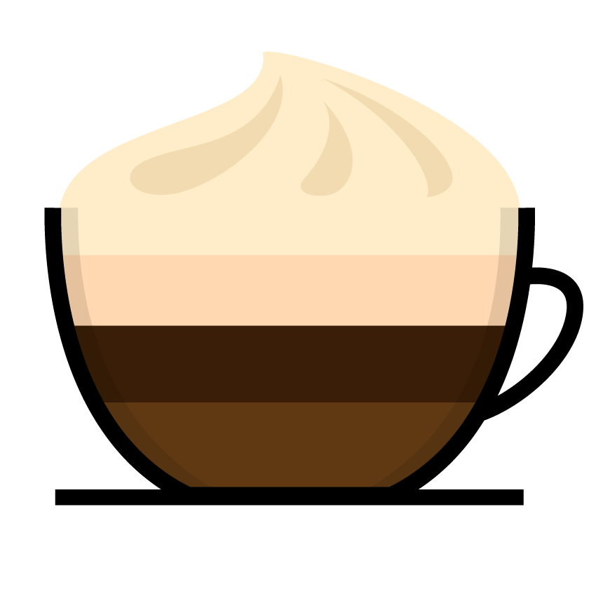
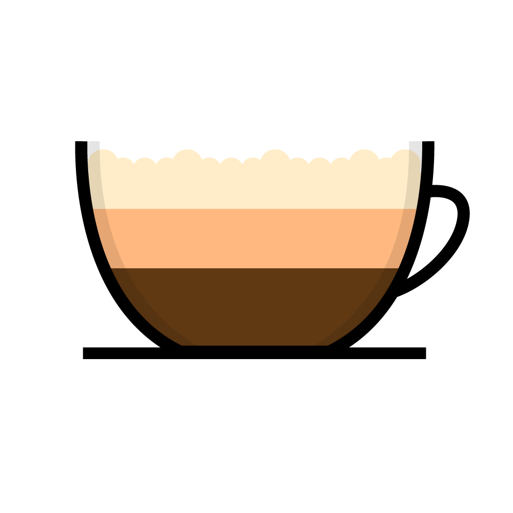
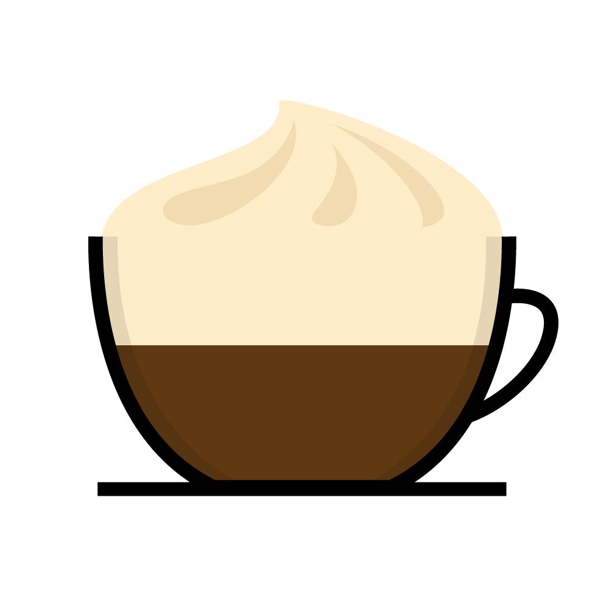

Click on each image to see the ingredients and learn more about the history of the drink.
Americano

Espresso Water
Caffe Americano is a type of coffee drink prepared by diluting an espresso with hot water, giving it a similar strength to, but different flavor from, traditionally brewed coffee.
Breve

Espresso Half and Half
Milk Foam
Made like a cappuccino, but with steamed half-and-half instead of milk. This produces a very creamy foam.
Cafe Latte

Espresso Steamed Milk
Milk Foam
Typically prepared with one standard shot of espresso and filled with steamed milk, with a layer of foamed milk approximately 1⁄2 in thick on the top.
Flat White

Espresso Steamed Milk
Consisting of espresso with microfoam. It is comparable to a latte, but smaller in volume and with less microfoam, therefore having a higher proportion of coffee to milk.
Macchiato

Espresso Milk Foam
Sometimes called espresso macchiato, is an espresso coffee drink with a small amount of milk, usually foamed.
Mocha

Espresso Chocolate
Steamed Milk
Whipped Cream
Also called mocaccino, is a chocolate-flavored variant of a caffè latte.
Raf Coffee

Espresso Vanilla Sugar
Cream
Invented circa 1996 at one of Moscow's first cafés, this is one of the most popular drinks in nearly every café in the Russian capital.
Red Eye

Espresso Drip Coffee
A red eye is a fortified coffee drink in which espresso is combined with normal drip coffee.
Vienna

Espresso Whipped Cream
Made by preparing two shots of strong black espresso in a standard sized coffee cup and infusing the coffee with whipped cream until the cup is full.